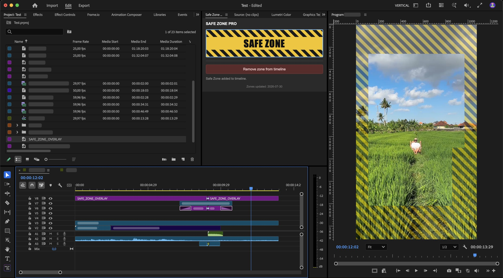

SAFE
ZONE
ZONE
Plugin für Adobe Premiere Pro
Safe Zone Pro
Du schneidest vertikale Shorts/Reels — und das Interface der Plattform verdeckt dein Bild.
Safe Zone Pro legt dir die Safe Zone direkt als eigene Ebene auf die Timeline. Ein Klick — drin. Noch einer — vor dem Export wieder weg.
- Zone mit einem Klick rein und raus
- Eigene Spur — deine Sequenz merkt nichts davon
- Ein Klick auf Remove — das Overlay verschwindet aus der Sequenz und aus dem Projekt
Premiere meckert beim Installieren, dass das Plugin nicht aus dem Marketplace kommt. Alles gut — einfach auf Weiter.
